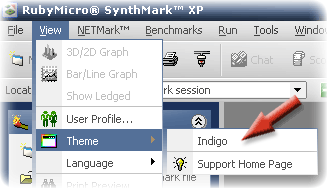

|
Switching Themes
with SynthMark XP. See Also: Switching Languages, Back to Main.
Themes are also known as skins and allow you to customize your
SynthMark XP colors and fonts. This is great for when you get bored of the
old ones. It wasn’t really necessary to develop such a new system for
SynthMark XP being a benchmarking suite, but we had it coming anyway, and
SynthMark XP is not the only program we have plans to use our new GUI engine
on. Well at the time of writing this document we did not have any
other themes to show you except our default one called Indigo. It comes
built-in with the SynthMark XP installer but as I mentioned to you that more
themes will be downloadable soon. How to switch themes: 1.
Once SynthMark XP is open. 2.
Click on the view menu. 3.
Followed by the theme sub-menu. 4.
You will now see a list of all the themes available on your
system. 5.
Simply click the one you want and the themes will switch
almost instantly.  Notes on themes: The themes are stored in the following directory on your
computer, and can be manually edited at your own risk. The file formats
supported by SynthMark XP are… Folder: [Windows System]\AndyFutcher\Engine001 Formats Supported: JPEG, GIF, BMP, ICO and WMF. Picture Sizes: Any, the software automatically resizes to fit. The config0.dat file contains all the color information needed
by SynthMark XP. The color values are a decimal value of an OLE_RGB format. |